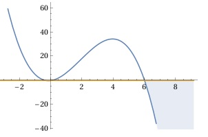

Aufgabe 50 Bestimmen Sie die Lösungsmenge der Ungleichung für x ∈ ℝ: (6 - x)(x² + 0,3x) ≤ 0 ist dann der Fall, wenn (6 - x) ≥ 0 → x ≤ 6 = D1 und (x² + 0,3x) ≤ 0 (x² + 0,3x) = x(x + 0,3) x(x + 0,3) ≤ 0 Ist dann der Fall, wenn x ≤ 0 und D2 = -0,3 ≤ x ≤ 0 x + 0,3 ≥ 0 → x ≥ -0,3 oder wenn x ≥ 0 und D3 = ∅ x + 0,3 ≤ 0 → x ≤ -0,3 D4 = D2 ∩ D3 = -0,3 ≤ x ≤ 0 ∩ ∅ = -0,3 ≤ x L1 = D1 ∩ D4 = x ≤ 6 ∩ -0,3 ≤ x ≤ 0 = -0,3 ≤ x ≤ 0 oder wenn (6 - x) ≤ 0 → x ≥ 6 = D5 und (x² + 0,3x) ≥ 0 x(x + 0,3) ≥ 0 ist dann der Fall, wenn x ≥ 0 D6 = 0 ≤ x ≤ ∞ x + 0,3 ≥ 0 → x ≥ -0,3 oder wenn x ≤ 0 D7 = -∞ ≤ x ≤ -0,3 x + 0,3 ≤ 0 → x ≤ -0,3 D8 = D6 ∩ D7 = 0 ≤ x ≤ ∞ ∩ -∞ ≤ x ≤ -0,3 = ∅ L2 = D5 ∩ D8 = x ≥ 6 ∩ ∅ = x ≥ 6 L = L1 ∪ L1 L = -0,3 ≤ x ≤ 0 ∪ x ≥ 6 In Worten: Für -0,3 ≤ x ≤ 0 oder x ≥ 6 ist (6 - x)(x² + 0,3x) ≤ 0. 